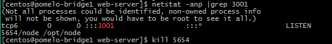
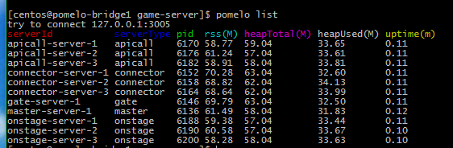

pomelo学习总结
简述pomelo的使用
1. 创建一个pomelo项目
pomelo 安装好，创建一个demo很简单，以创建一个helloworld项目为例：
pommelo init hellworld
这样一个helloworld项目就创建完成了。
2. pomelo项目启动
poemlo项目分为game-server(服务端)和web-server(客户端)两部分。
服务端启动： 在game-server目录下执行
pomelo start 或者 node app.js
在后台运行时执行
pomelo start -D 或者 node app.js &
客户端启动： 在web-server目录下执行
node app.js
在后台运行时执行
node app.js &
3. pomelo停止运行
服务端停止运行： 不在后台运行时，直接执行：
Ctrl+c
在后台运行时，需在game-server目录下执行：
pomelo stop
客户端停止运行： 不在后台运行时，直接执行：
Ctrl+c
在后台运行时，需查询对应的进程号，然后杀死该进程，例如，客户端启动的是3001端口，查询进程号：
netstat -anp |grep 3001
 如图，查询出进程号为5654，然后执行：
kill 5654
杀死该进程
4. pomelo查询启动的进程
在game-server目录下执行：
pomelo list
结果如下图：
